4.2 Simple base R plots
There are many functions in R to produce plots ranging from the very basic to the highly complex. It’s impossible to cover every aspect of producing graphics in R in this introductory book so we’ll introduce you to most of the common methods of graphing data and describe how to customise your graphs later on in this Chapter.
4.2.1 Scatterplots
The most common high level function used to produce plots in R is (rather unsurprisingly) the plot() function. For example, let’s plot the weight of petunia plants from our flowers data frame which we imported in Chapter 3.
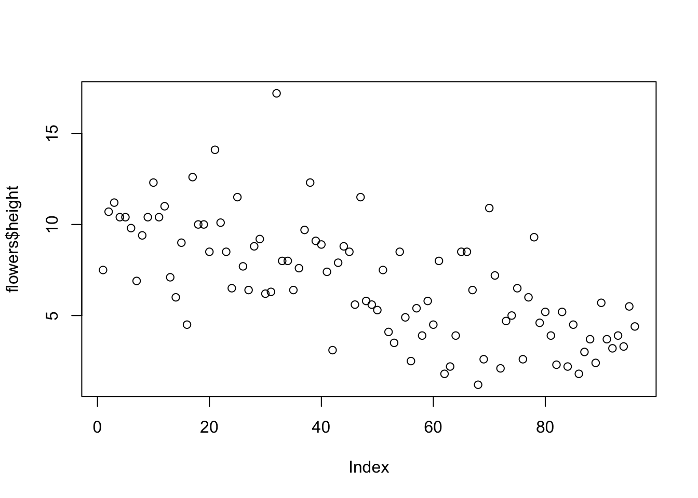
R has plotted the values of weight (on the y axis) against an index since we are only plotting one variable to plot. The index is just the order of the weight values in the data frame (1 first in the data frame and 97 last). The weight variable name has been automatically included as a y axis label and the axes scales have been automatically set.
If we’d only included the variable weight rather than flowers$weight, the plot() function will display an error as the variable weight only exists in the flowers data frame object.
As many of the base R plotting functions don’t have a data = argument to specify the data frame name directly we can use the with() function in combination with plot() as a shortcut.
To plot a scatterplot of one numeric variable against another numeric variable we just need to include both variables as arguments when using the plot() function. For example to plot shootarea on the y axis and weight of the x axis.

There is an equivalent approach for these types of plots which often causes some confusion at first. You can also use the formula notation when using the plot() function. However, in contrast to the previous method the formula method requires you to specify the y axis variable first, then a ~ and then our x axis variable.

Both of these two approaches are equivalent so we suggest that you just choose the one you prefer and go with it.
You can also specify the type of graph you wish to plot using the argument type =. You can plot just the points (type = "p", this is the default), just lines (type = "l"), both points and lines connected (type = "b"), both points and lines with the lines running through the points (type = "o") and empty points joined by lines (type = "c"). For example, let’s use our skills from Chapter 2 to generate two vectors of numbers (my_x and my_y) and then plot one against the other using different type = values to see what type of plots are produced. Don’t worry about the par(mfrow = c(2, 2)) line of code yet. We’re just using this to split the plotting device so we can fit all four plots on the same device to save some space. See later in the Chapter for more details about this. The top left plot is type = "l", the top right type = "b", bottom left type = "o" and bottom right is type = "c".
my_x <- 1:10
my_y <- seq(from = 1, to = 20, by = 2)
par(mfrow = c(2, 2))
plot(my_x, my_y, type = "l")
plot(my_x, my_y, type = "b")
plot(my_x, my_y, type = "o")
plot(my_x, my_y, type = "c")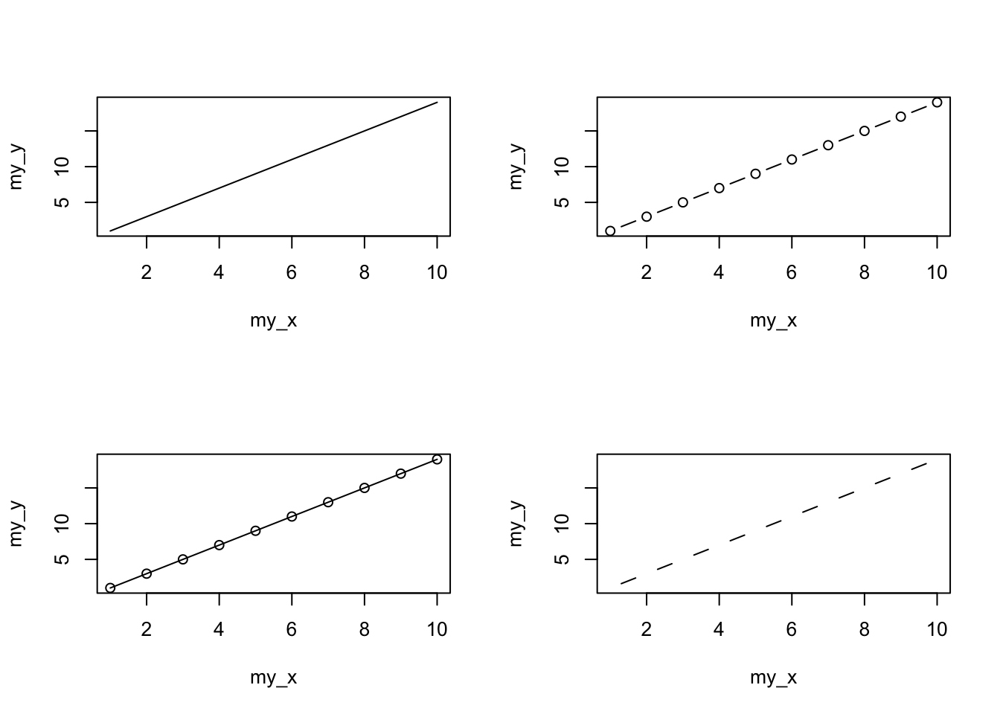
Admittedly the plots we’ve produced so far don’t look anything particularly special. However, the plot() function is incredibly versatile and can generate a large range of plots which you can customise to your own taste. We’ll cover how to customise plots later in the Chapter. As a quick aside, the plot() function is also what’s known as a generic function which means it can change it’s default behaviour depending on the type of object used as an argument. You will see an example of this in Chapter 6 where we use the plot() function to generate diagnostic plots of residuals from a linear model object (bet you can’t wait!).
4.2.2 Histograms
Frequency histograms are useful when you want to get an idea about the distribution of values in a numeric variable. The hist() function takes a numeric vector as its main argument. Let’s generate a histogram of the height values.
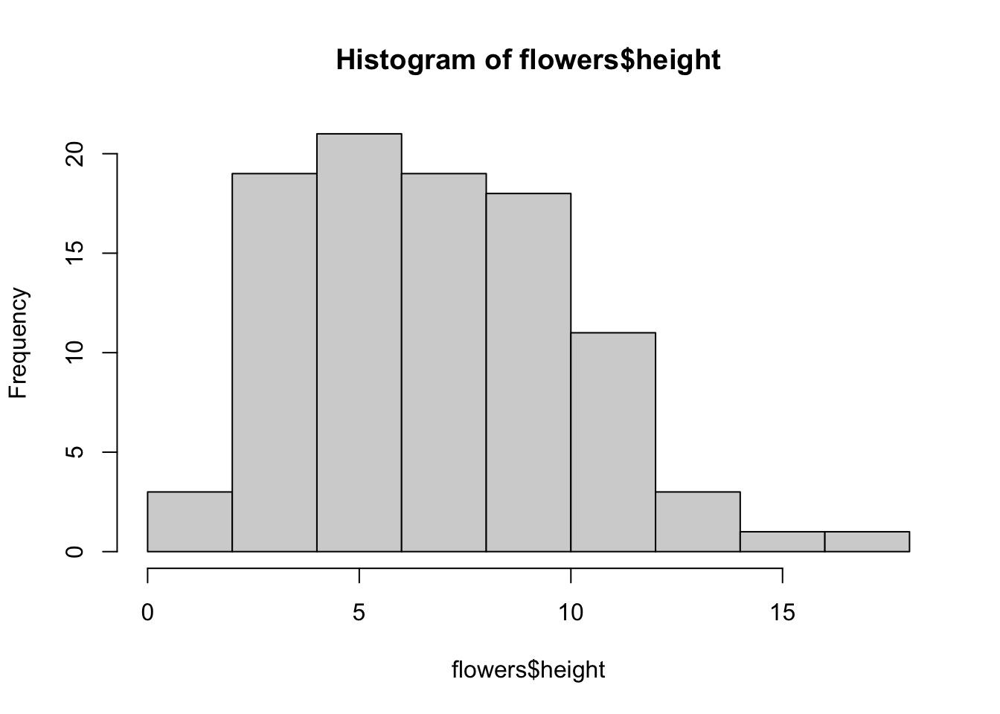
The hist() function automatically creates the breakpoints (or bins) in the histogram using the Sturges formula unless you specify otherwise by using the break = argument. For example, let’s say we want to plot our histogram with breakpoints every 1 cm flower height. We first generate a sequence from zero to the maximum value of height (18 rounded up) in steps of 1 using the seq() function. We can then use this sequence with the breaks = argument. While we’re at it, let’s also replace the ugly title for something a little better using the main = argument
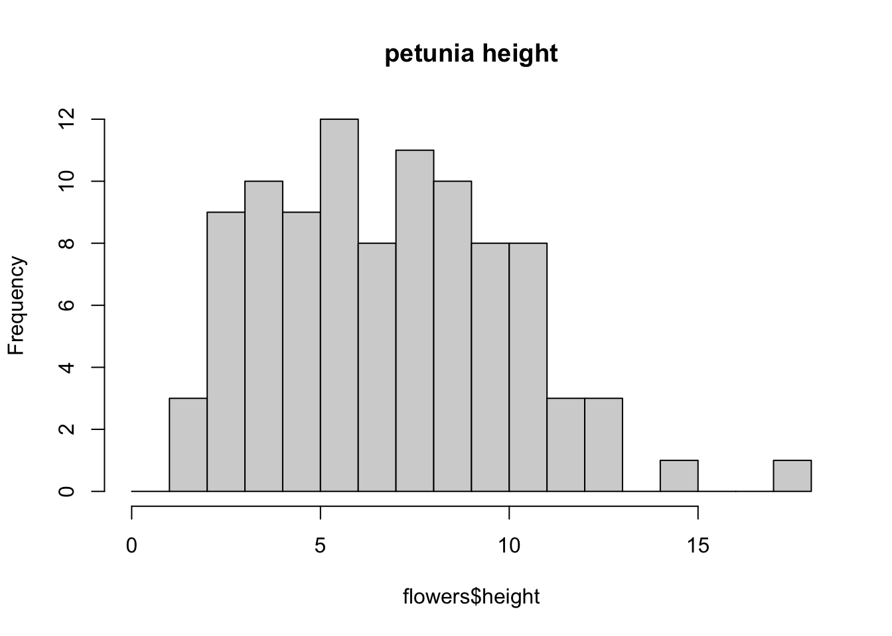
You can also display the histogram as a proportion rather than a frequency by using the freq = FALSE argument.
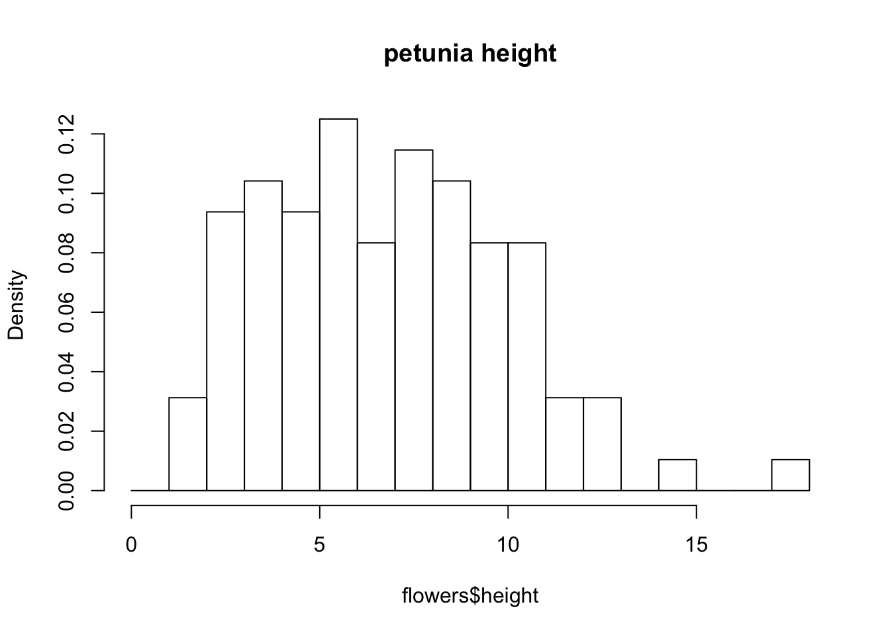
An alternative to plotting just a straight up histogram is to add a kernel density curve to the plot. You can superimpose a density curve onto the histogram by first using the density() function to compute the kernel density estimates and then use the low level function lines() to add these estimates onto the plot as a line.
dens <- density(flowers$height)
hist(flowers$height, breaks = brk, main = "petunia height",
freq = FALSE)
lines(dens)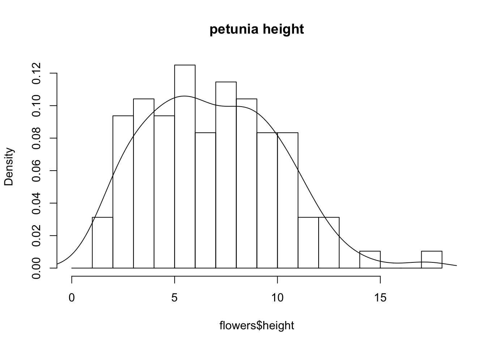
4.2.3 Box and violin plots
OK, we’ll just come and out and say it, we love boxplots and their close relation the violin plot. Boxplots (or box-and-whisker plots to give them their full name) are very useful when you want to graphically summarise the distribution of a variable, identify potential unusual values and compare distributions between different groups. The reason we love them is their ease of interpretation, transparency and relatively high data-to-ink ratio (i.e. they convey lots of information efficiently). We suggest that you try to use boxplots as much as possible when exploring your data and avoid the temptation to use the more ubiquitous bar plot (even with standard error or 95% confidence intervals bars). The problem with bar plots (aka dynamite plots) is that they hide important information from the reader such as the distribution of the data and assume that the error bars (or confidence intervals) are symmetric around the mean. Of course, it’s up to you what you do but if you’re tempted to use bar plots just Google ‘dynamite plots are evil’ or see here or here for a fuller discussion.
To create a boxplot in R we use the boxplot() function. For example, let’s create a boxplot of the variable weight from our flowers data frame. We can also include a y axis label using the ylab = argument.
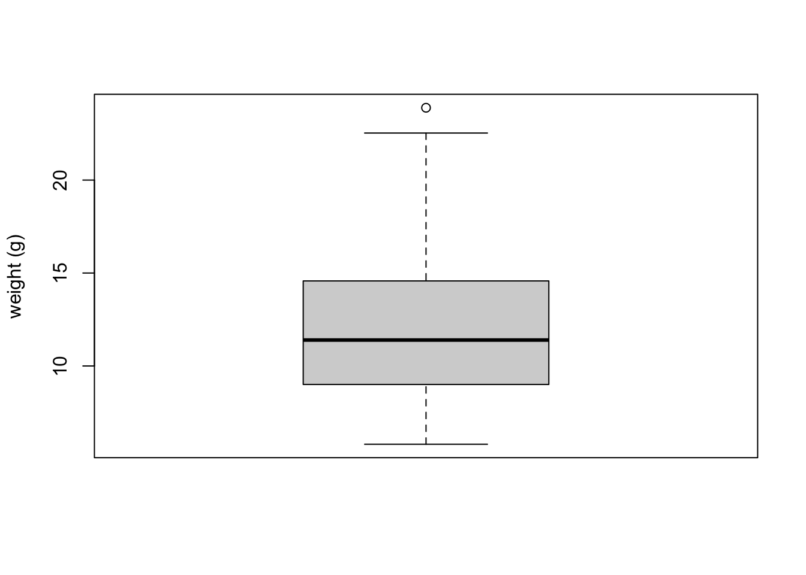
The thick horizontal line in the middle of the box is the median value of weight (around 11 g). The upper line of the box is the upper quartile (75th percentile) and the lower line is the lower quartile (25th percentile). The distance between the upper and lower quartiles is known as the inter quartile range and represents the values of weight for 50% of the data. The dotted vertical lines are called the whiskers and their length is determined as 1.5 x the inter quartile range. Data points that are plotted outside the the whiskers represent potential unusual observations. This doesn’t mean they are unusual, just that they warrant a closer look. We recommend using boxplots in combination with Cleveland dotplots to identify potential unusual observations (see the next section of this Chapter for more details). The neat thing about boxplots is that they not only provide a measure of central tendency (the median value) they also give you an idea about the distribution of the data. If the median line is more or less in the middle of the box (between the upper and lower quartiles) and the whiskers are more or less the same length then you can be reasonably sure the distribution of your data is symmetrical.
If we want examine how the distribution of a variable changes between different levels of a factor we need to use the formula notation with the boxplot() function. For example, let’s plot our weight variable again, but this time see how this changes with each level of nitrogen. When we use the formula notation with boxplot() we can use the data = argument to save some typing. We’ll also introduce an x axis label using the xlab = argument.

The factor levels are plotted in the same order defined by our factor variable nitrogen (often alphabetically). To change the order we need to change the order of our levels of the nitrogen factor in our data frame using the factor() function and then re-plot the graph. Let’s plot our boxplot with our factor levels going from low to high.
flowers$nitrogen <- factor(flowers$nitrogen,
levels = c("low", "medium", "high"))
boxplot(weight ~ nitrogen, data = flowers,
ylab = "weight (g)", xlab = "nitrogen level")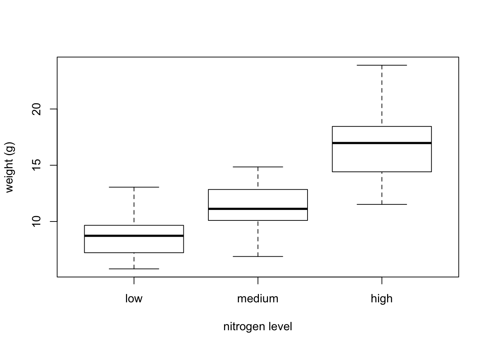
We can also group our variables by two factors in the same plot. Let’s plot our weight variable but this time plot a separate box for each nitrogen and treatment (treat) combination.
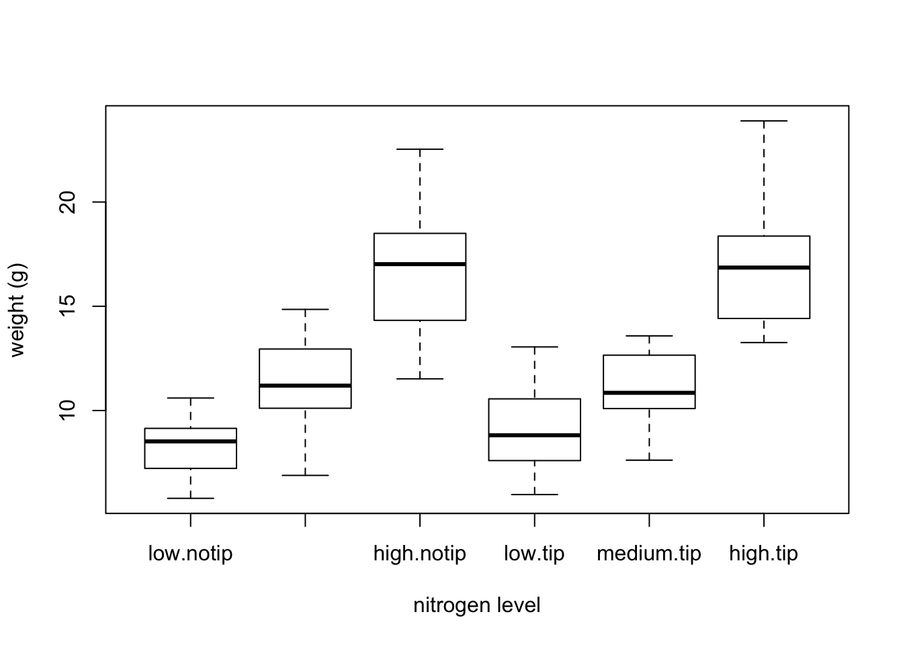
This plot looks OK, but some of the group labels are hidden as they’re too long to fit on the plot. There are a couple of ways to deal with this. Perhaps the easiest is to reduce the font size of the tick mark labels in the plot so they all fit using the cex.axis = argument. Let’s set the font size to be 30% smaller than the default with cex.axis = 0.7. We’ll show you how to further customise plots later on in the Chapter.
boxplot(weight ~ nitrogen * treat, data = flowers,
ylab = "weight (g)", xlab = "nitrogen level",
cex.axis = 0.7)
Violin plots are like a combination of a boxplot and a kernel density plot (you saw an example of a kernel density plot in the histogram section above) all rolled into one figure. We can create a violin plot in R using the vioplot() function from the vioplot package. You’ll need to first install this package using install.packages('vioplot') function as usual. The nice thing about the vioplot() function is that you use it in pretty much the same way you would use the boxplot() function. We’ll also use the argument col = "lightblue" to change the fill colour to light blue.
library(vioplot)
vioplot(weight ~ nitrogen, data = flowers,
ylab = "weight (g)", xlab = "nitrogen level",
col = "lightblue")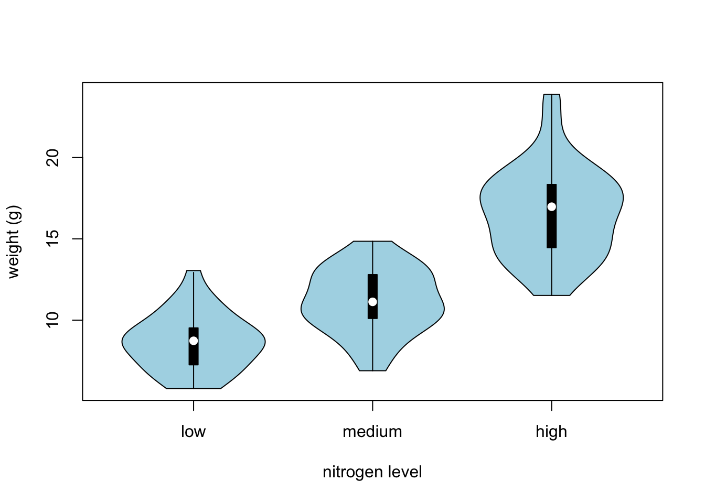
In the violin plot above we have our familiar boxplot for each nitrogen level but this time the median value is represented by a white circle. Plotted around each boxplot is the kernel density plot which represents the distribution of the data for each nitrogen level.
4.2.4 Dot charts
Identifying unusual observations (aka outliers) in numeric variables is extremely important as they may influence parameter estimates in your statistical model or indicate an error in your data. A really useful (if undervalued) plot to help identify outliers is the Cleveland dotplot. You can produce a dotplot in R very simply by using the dotchart() function.

In the dotplot above the data from the height variable is plotted along the x axis and the data is plotted in the order it occurs in the flowers data frame on the y axis (values near the top of the y axis occur later in the data frame with those lower down occurring at the beginning of the data frame). In this plot we have a single value extending to the right at about 17 cm but it doesn’t appear particularly large compared to the rest. An example of a dotplot with an unusual observation is given below.
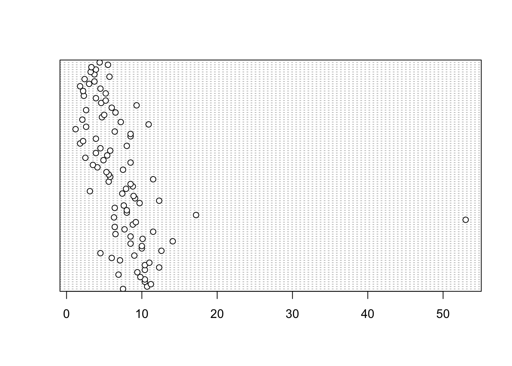
We can also group the values in our height variable by a factor variable such as nitrogen using the groups = argument. This is useful for identifying unusual observations within a factor level that might be obscured when looking at all the data together.
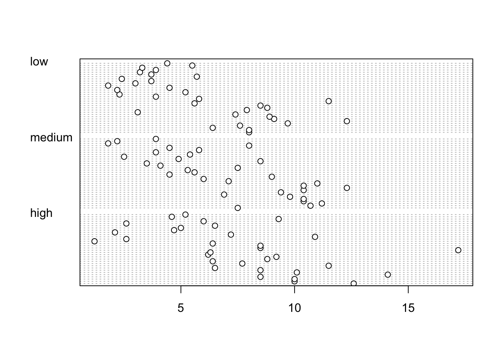
4.2.5 Pairs plots
Previously in this Chapter we used the plot() function to create a scatterplot to explore the relationship between two numeric variables. With datasets that contain many numeric variables, it’s often handy to create multiple scatterplots to visualise relationships between all these variables. We could use the plot() function to create each of these plot individually, but a much easier way is to use the pairs() function. The pairs() function creates a multi-panel scatterplot (sometimes called a scatterplot matrix) which plots all combinations of variables. Let’s create a multi-panel scatterplot of all of the numeric variables in our flowers data frame. Note, you may need to click on the ‘Zoom’ button in RStudio to display the plot clearly.
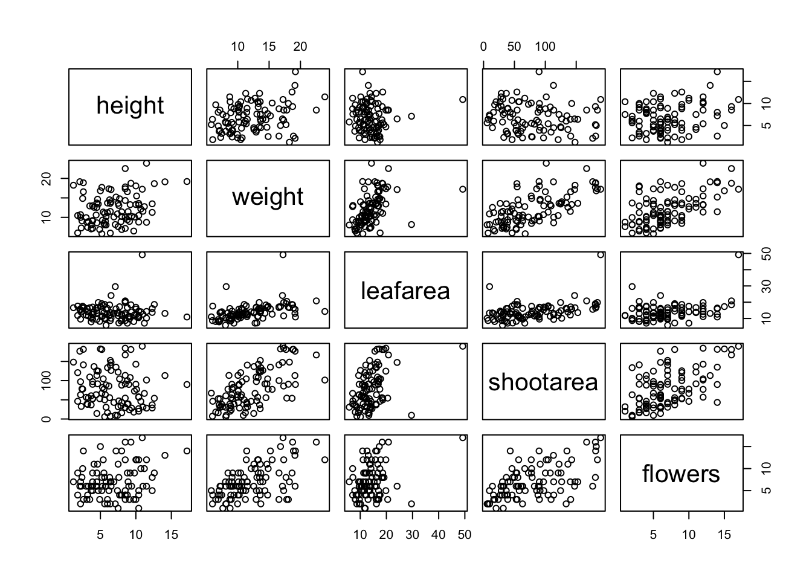
Interpretation of the pairs plot takes a bit of getting used to. The panels on the diagonal give the variable names. The first row of plots displays the height variable on the y axis and the variables weight, leafarea, shootarea and flowers on the x axis for each of the four plots respectively. The next row of plots have weight on the y axis and height, leafarea, shootarea and flowers on the x axis. We interpret the rest of the rows in the same way with the last row displaying the flowers variable on the y axis and the other variables on the x axis. Hopefully you’ll notice that the plots below the diagonal are the same plots as those above the diagonal just with the axis reversed.
We can also add additional information to each of our plots by including a panel function when we use the pairs() function. For example, to add a LOWESS (locally weighted scatterplot smoothing) smoother to each of the panels we just need to add the argument panel = panel.smooth.
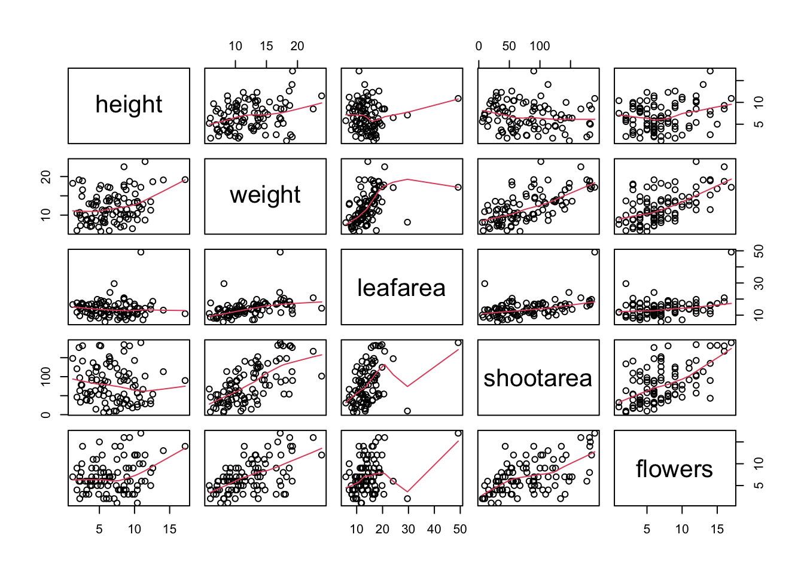
If you take a look at the help file for the pairs() function (?pairs) you’ll find a few more useful panel functions in the ‘Examples’ section. To use these functions you’ll first need to copy the code and paste it into the Console in RStudio (we go into more detail about defining functions in Chapter 7). For example, the panel.cor() function calculates the absolute correlation coefficient between two variables and adjusts the size of the displayed coefficient depending on the value (higher coefficient values are bigger). Don’t worry if you don’t understand this code just yet, for the moment we just need to know how to use it (it might be fun to try and figure it out though!).
panel.cor <- function(x, y, digits = 2, prefix = "", cex.cor, ...)
{
usr <- par("usr"); on.exit(par(usr))
par(usr = c(0, 1, 0, 1))
r <- abs(cor(x, y))
txt <- format(c(r, 0.123456789), digits = digits)[1]
txt <- paste0(prefix, txt)
if(missing(cex.cor)) cex.cor <- 0.8/strwidth(txt)
text(0.5, 0.5, txt, cex = cex.cor * r)
}Once we’ve copied and pasted this code into the Console we can use the panel.cor() function to replace the plots below the diagonal with the correlation coefficient using the lower.panel = argument.
pairs(flowers[, c("height", "weight", "leafarea",
"shootarea", "flowers")],
lower.panel = panel.cor)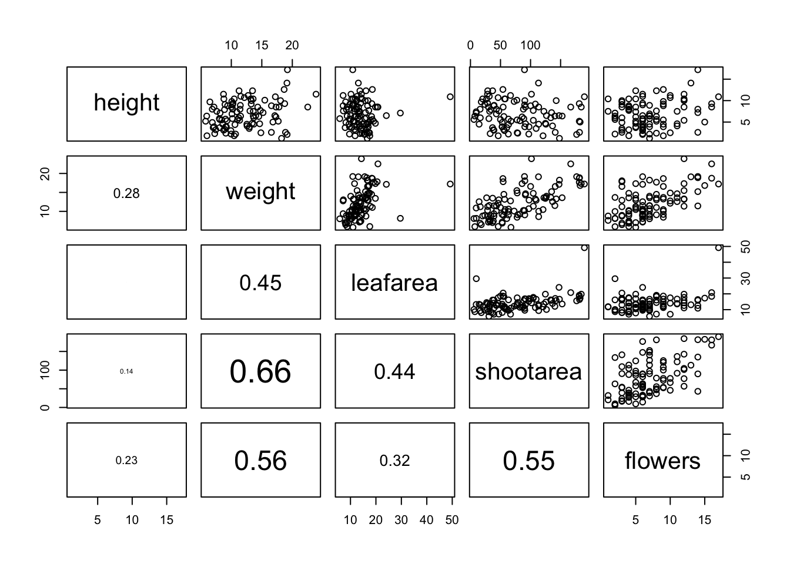
Another useful function in the ‘Examples’ section is the panel.hist() function. This function generates a histogram of each of the variables in the plot. To use it, we must again copy the code and paste it into the Console in RStudio.
panel.hist <- function(x, ...)
{
usr <- par("usr"); on.exit(par(usr))
par(usr = c(usr[1:2], 0, 1.5) )
h <- hist(x, plot = FALSE)
breaks <- h$breaks; nB <- length(breaks)
y <- h$counts; y <- y/max(y)
rect(breaks[-nB], 0, breaks[-1], y, col = "cyan", ...)
}We can then include it in our pairs() function to place the histograms on the diagonal set of panels using the diag.panel = panel.hist argument. Let’s also apply the panel.smooth() function to the plots above the diagonal while we’re at it using the upper.panel = panel.smooth argument.
pairs(flowers[, c("height", "weight", "leafarea",
"shootarea", "flowers")],
lower.panel = panel.cor,
diag.panel = panel.hist,
upper.panel = panel.smooth)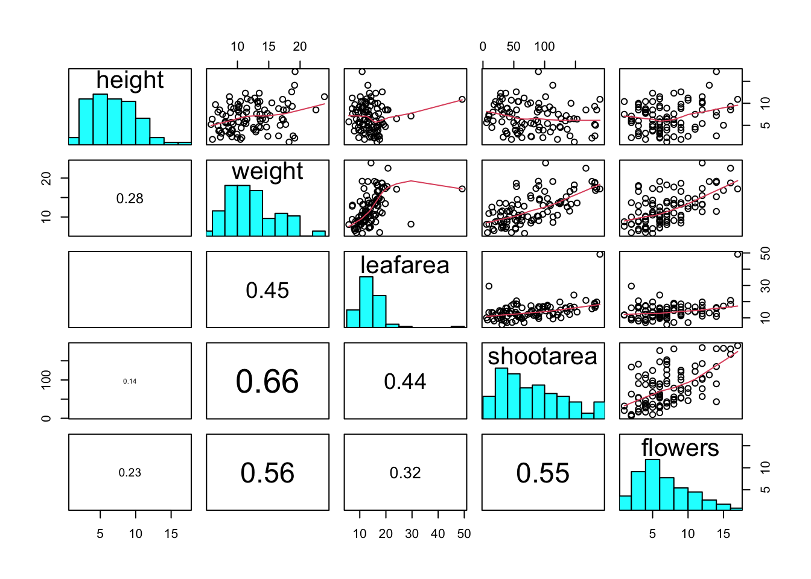
4.2.6 Coplots
When examining the relationship between two numeric variables, it is often useful to be able to determine whether a third variable is obscuring or changing any relationship. A really handy plot to use in these situations is a conditioning plot (also known as conditional scatterplot plot) which we can create in R by using the coplot() function. The coplot() function plots two variables but each plot is conditioned (|) by a third variable. This third variable can be either numeric or a factor. As an example, let’s look at how the relationship between the number of flowers (flowers variable) and the weight of petunia plants changes dependent on leafarea. Note the coplot() function has a data = argument so no need to use the $ notation.
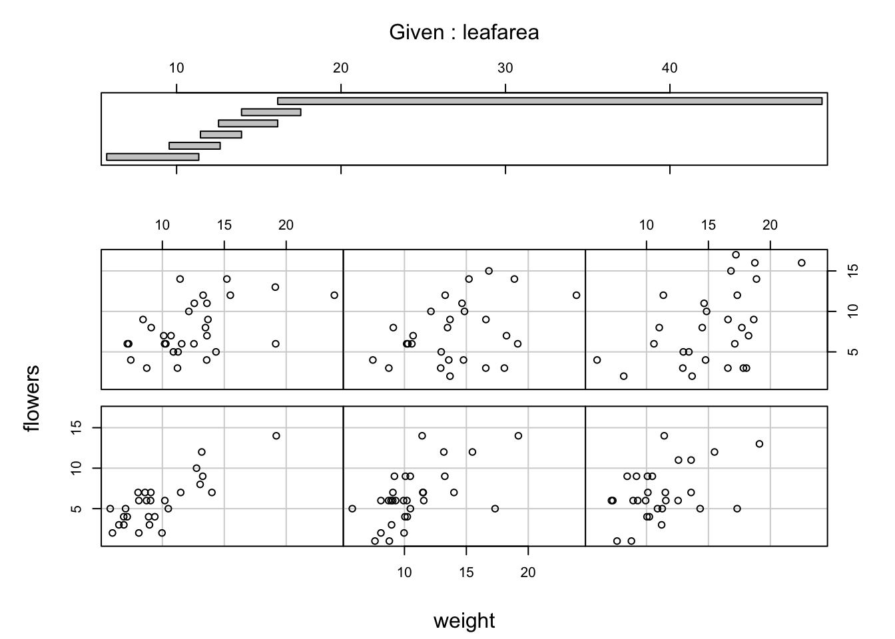
It takes a little practice to interpret coplots. The number of flowers is plotted on the y axis and the weight of plants on the x axis. The six plots show the relationship between these two variables for different ranges of leaf area. The bar plot at the top indicates the range of leaf area values for each of the plots. The panels are read from bottom left to top right along each row. For example, the bottom left panel shows the relationship between number of flowers and weight for plants with the lowest range of leaf area values (approximately 5 - 11 cm2). The top right plot shows the relationship between flowers and weight for plants with a leaf area ranging from approximately 16 - 50 cm2. Notice that the range of values for leaf area differs between panels and that the ranges overlap from panel to panel. The coplot() function does it’s best to split the data up to ensure there are an adequate number of data points in each panel. If you don’t want to produce plots with overlapping data in the panel you can set the overlap = argument to overlap = 0
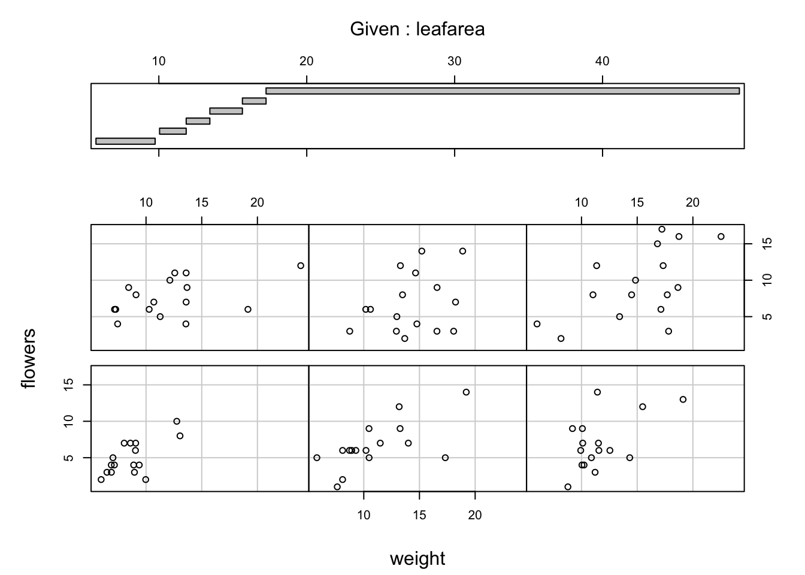
You can also use the coplot() function with factor conditioning variables. For example, we can examine the relationship between flowers and weight variables conditioned on the factor nitrogen. Again, the bottom left plot is the relationship between flowers and weight for those plants in the high nitrogen treatment. The top left plot shows the same relationship but for plants in the high nitrogen treatment.
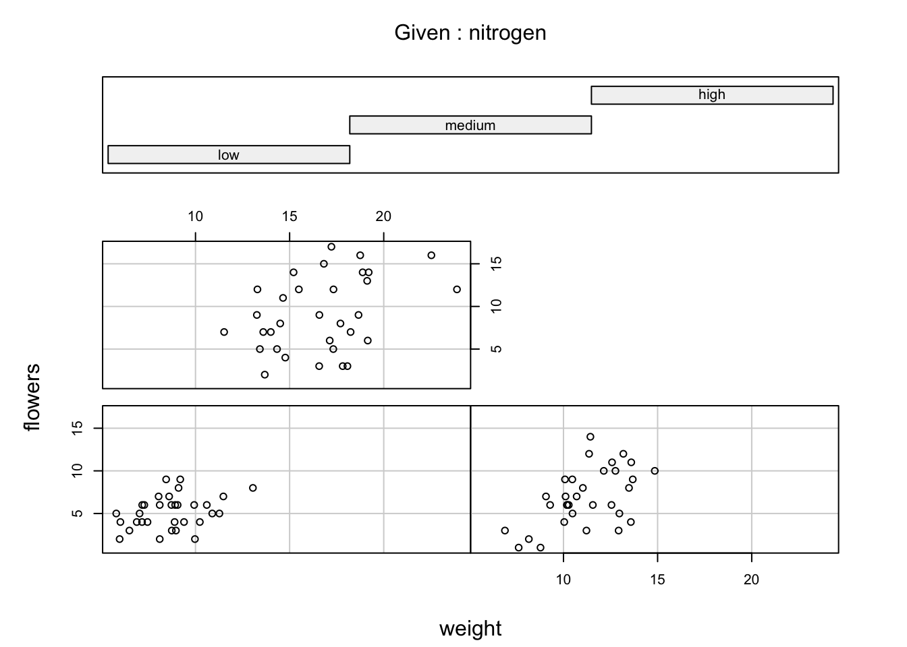
We can even use two conditioning variables (either numeric or factors). Let’s look at the relationship between flowers and height but this time condition on both nitrogen and treat.
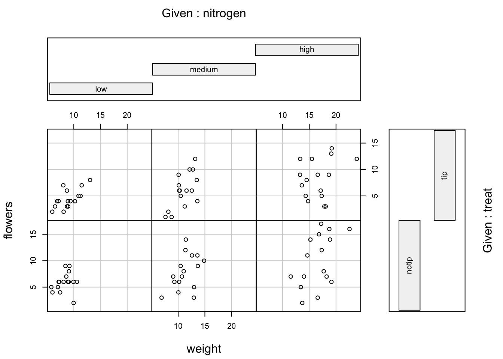
The bottom row of plots are for plants in the notip treatment and the top row for plants in the tip treatment. So the bottom left plot shows the relationship between flowers and weight for plants grown in low nitrogen with the notip treatment. The top right plot are those plants grown in high nitrogen with the tip treatment.
Similar to the pairs() function we can also apply functions to each of the panels using the panel = argument. For example, let’s add a separate line of best fit from a linear model to each of the panels. Don’t worry about the complicated looking code for now, this example is just included to give you an idea about some of the useful things you can do with base R plotting functions. We will introduce linear models in Chapter 6 and cover how to write functions in Chapter 7.
coplot(flowers ~ weight|nitrogen * treat, data = flowers,
panel = function(x, y, ...) {
points(x, y, ...)
abline(lm(y ~ x), col = "blue")})
4.2.7 Lattice plots
Many of the plots we’ve previously created using base R graphics can also be created using functions from the lattice package. For example, we can recreate the frequency histogram of the height variable in our flowers data frame using the histogram() function. All of the plotting functions in the lattice package take the formula notation which is why we need to include ~ height as our first argument. We also need to specify that we want a frequency histogram by using the argument type = "count". Don’t forget to first make the package available using library(lattice).
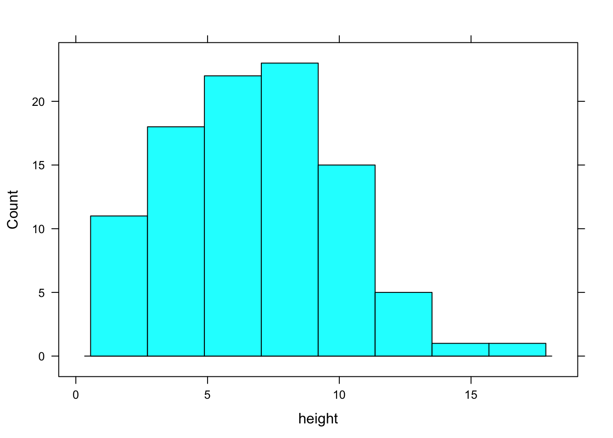
Or perhaps we would like a boxplot of our weight variable for each level of nitrogen using the bwplot() function.
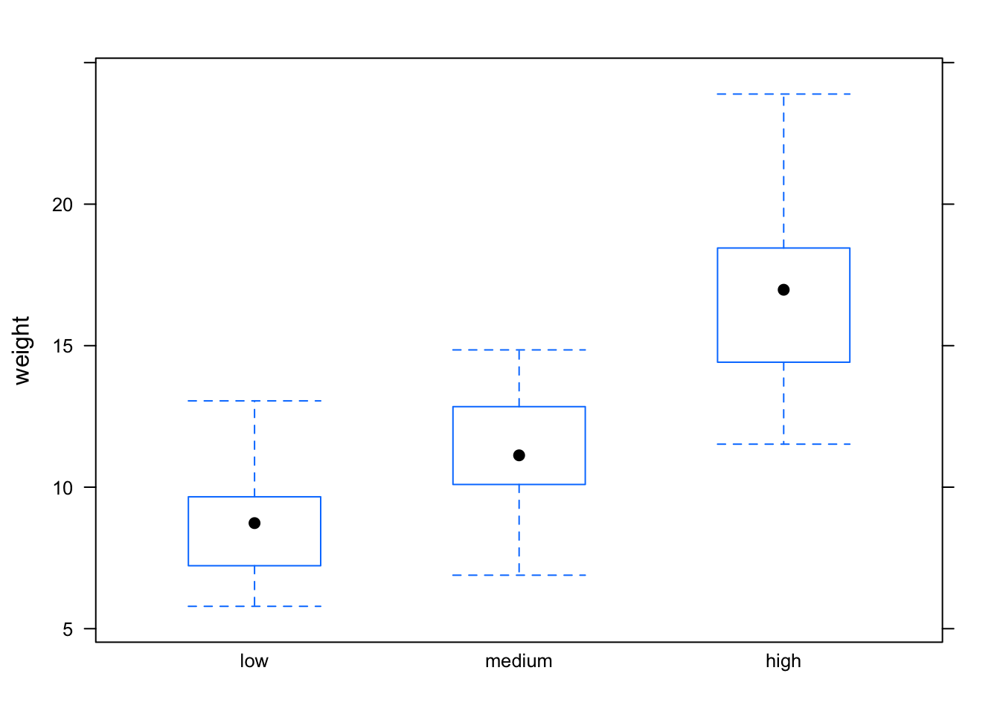
A (non-exhaustive) list of lattice functions and their base R equivalents is given in the table below.
| Graph type | lattice function | Base R function |
|---|---|---|
| scatterplot | xyplot() |
plot() |
| frequency histogram | histogram(type = "count") |
hist() |
| boxplot | bwplot() |
boxplot() |
| Cleveland dotplot | dotplot() |
dotchart() |
| scatterplot matrix | splom() |
pairs() |
| conditioning plot | xyplot(y ~ x | z) |
coplot() |
Where lattice plots really come into their own is when we want to plot graphs in multiple panels. For example, let’s plot a histogram of our height variable again but this time create a separate histogram for each nitrogen level. We do this by including the | (pipe) symbol which we read as ‘height conditional on nitrogen level’. Also notice that the the axis scales are the same for each of the panels to aid comparison which is the default for lattice plots.
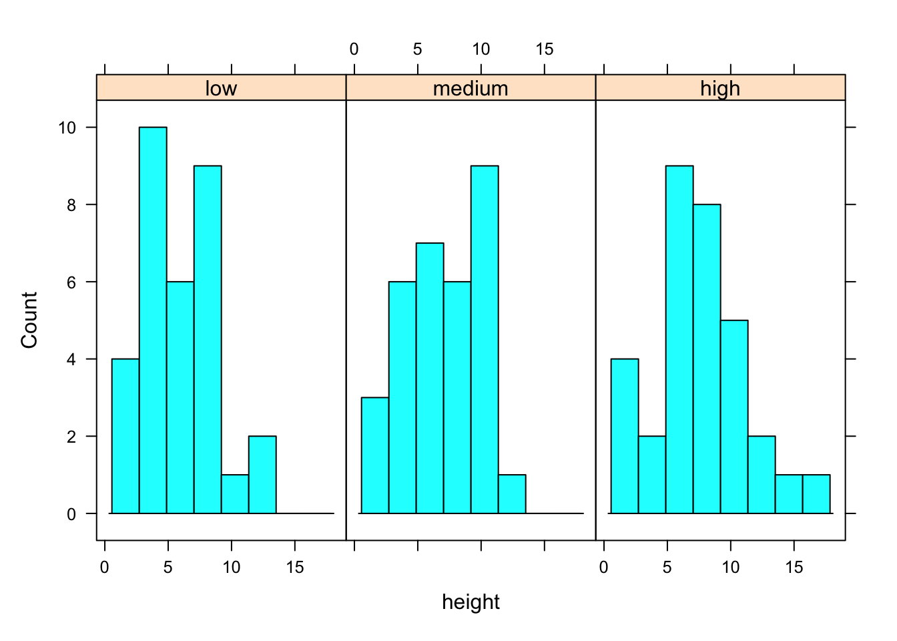
If we want to change the layout of our plots we can use the layout = argument. Perhaps we prefer all of the graphs to be stacked one on top of the other in which case we would use layout = c(1, 3) to specify 1 column and 3 rows of plots.
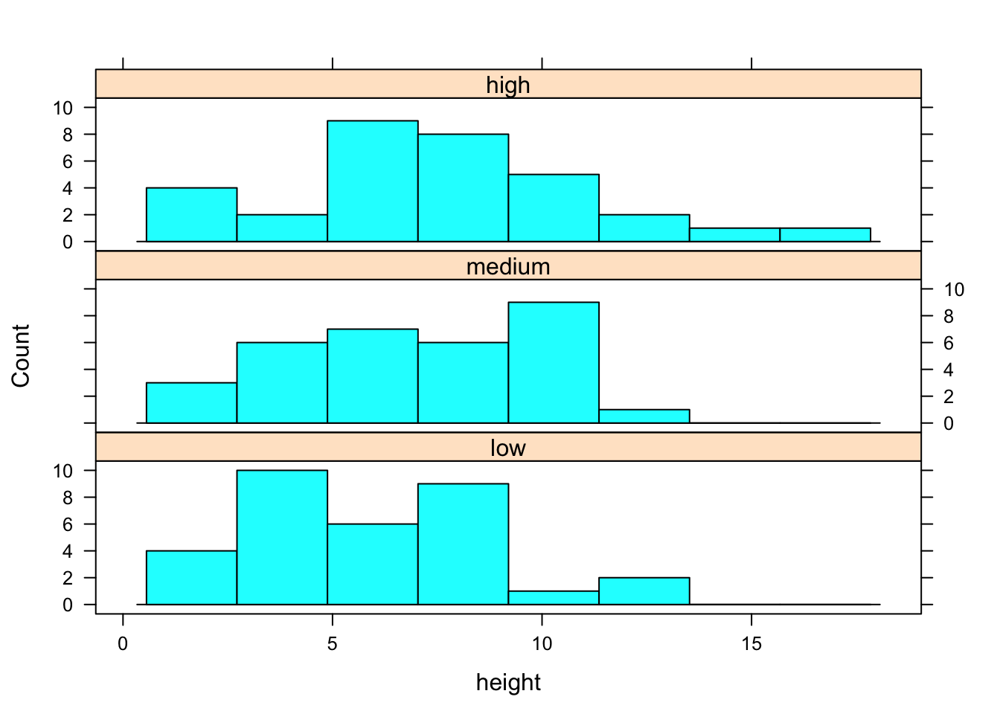
We can also easily create conditional boxplots using the same logic.
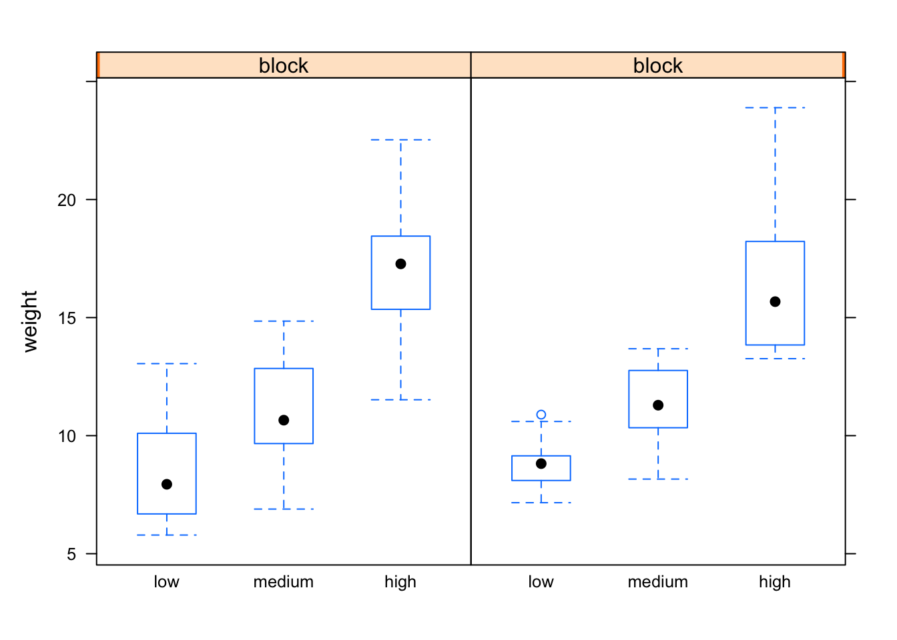
Notice in the plot above that the block names don’t seem to be displayed (actually they are, the’re just represented as orange vertical bars in the panel name). The reason for this is that our block variable is an integer variable (you can check this with class(flowers$block)) as the blocks were coded as either a 1 or a 2 in the original dataset that we imported into R. We can change this by creating a new variable in our data frame and use the factor() function to convert block to a factor (flowers$Fblock <- factor(flowers$block)) and then use the Fblock variable as the conditioning variable. Or we can just change block to be a factor ‘on-the-fly’ when we use it in the bwplot() function. Note, this doesn’t change the block variable in the flowers data frame, just temporarily when we use the bwplot() function.
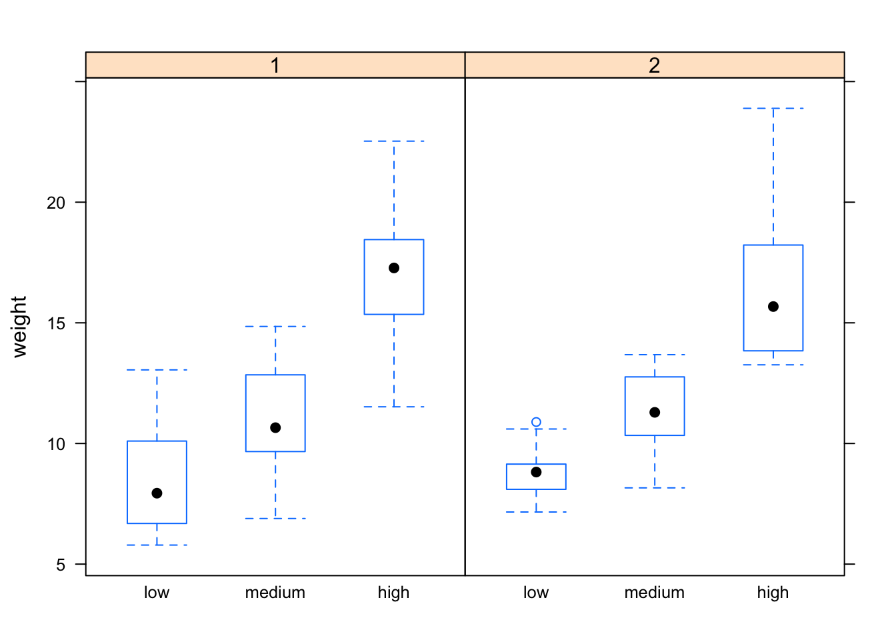
We can also include more than one conditioning variable. For example, let’s create a scatter plot of height against weight for each level of nitrogen and treat. To do this we’ll use the lattice xyplot() function.
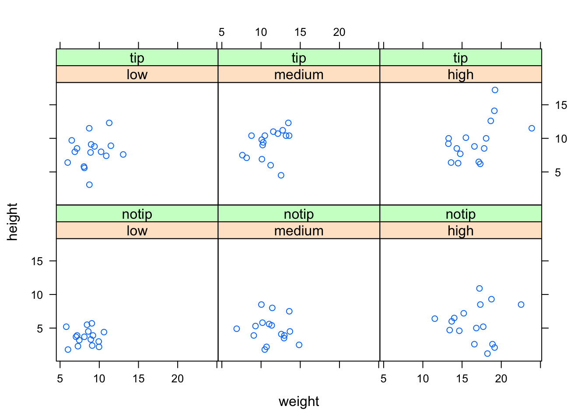
If we want to highlight which data points come from block 1 and which from block 2 by automatically changing the plotting symbols we can use the groups = argument. We’ll also include the argument auto.key = TRUE to automatically generate a legend.
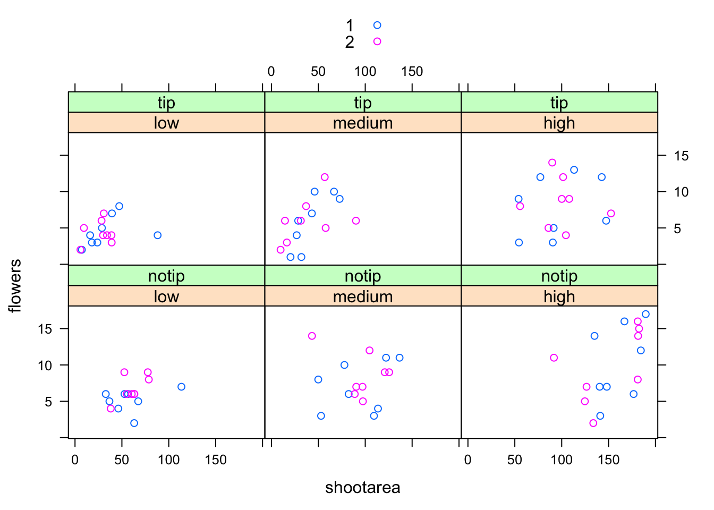
Hopefully, you’re getting the idea that we can create really informative exploratory plots quite easily using either base R or lattice graphics. Which one you use is entirely up to you (that’s the beauty of using R, you get to choose) and we happily mix and match to suit our needs. In the next section we cover how to customise your base R plots to get them to look exactly how you want.